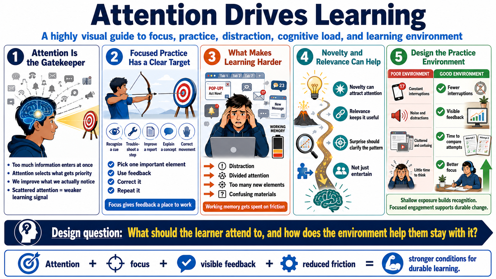

Attention and Focus in Plastic Change
Connecting to LMS... Progress: in progress

Narration
Attention is a gatekeeper for learning. The nervous system is exposed to far more information than it can process deeply, so attention helps select what receives priority. In practice, learners are more likely to improve the part of the task they actually notice and work on. If attention is scattered, the learning signal becomes weaker and less specific.
Focused practice improves learning because it gives the learner a clear target. The target might be recognizing a cue, correcting a movement, explaining a concept, choosing a troubleshooting step, or improving the first paragraph of a report. Focus does not mean ignoring the larger context forever. It means giving one important element enough attention that feedback and correction can change it.
Distraction, divided attention, and excessive cognitive load make learning harder. When learners are managing too many new elements, switching between alerts, or fighting confusing materials, working memory is spent on friction instead of improvement. Novelty and relevance can help focus attention, but novelty should serve the goal. A surprising example is useful when it clarifies the pattern, not when it simply entertains.
A good practice environment helps the learner notice and correct important details. It reduces unnecessary interruptions, makes feedback visible, and gives learners time to compare attempts. Shallow exposure may create recognition, but focused engagement creates stronger conditions for durable change. The design question is: what should the learner attend to, and how does the environment help them stay with it?